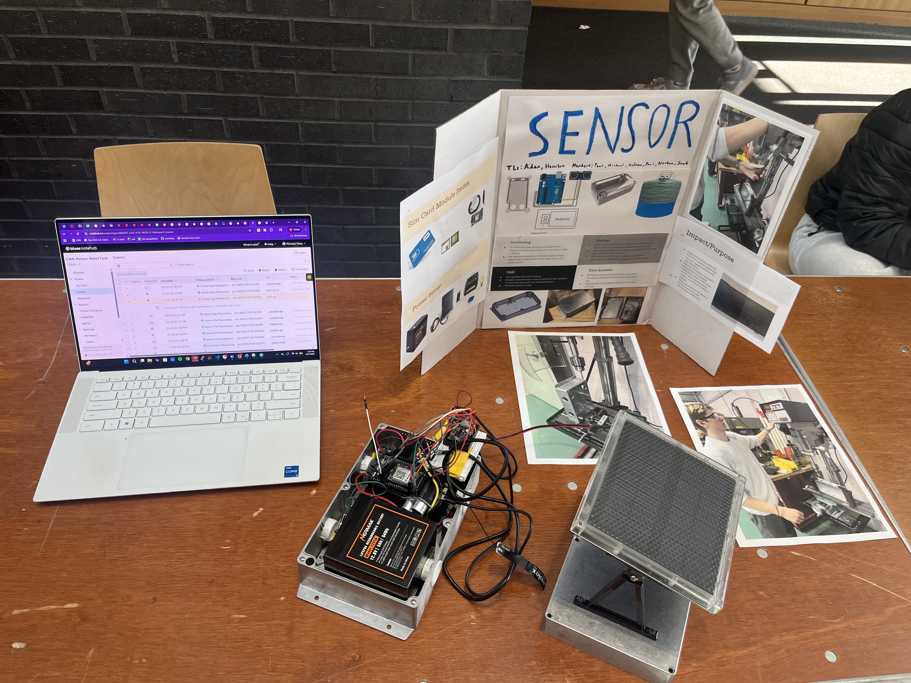
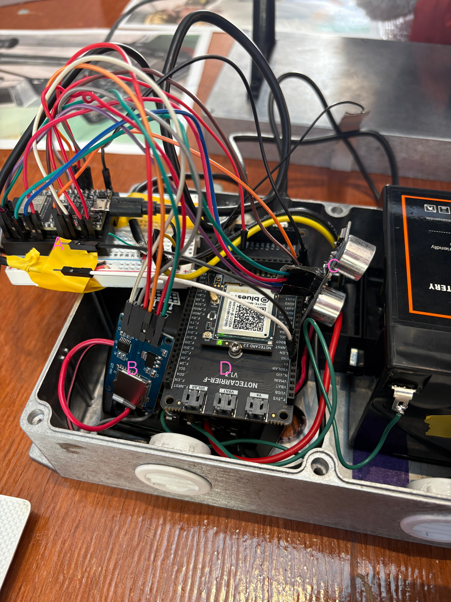

Malawi Water Tank Level Tracker
Engineers Without Borders @ Tufts

Project Summary
This project is for the community we partner with in Malawi through Tufts Engineers Without Borders. I led a project for measuring water level in a tank and sending the data to the United States for remote monitoring via cellular. The device is solar powered, charging a battery that powers our ESP32C3 microcontroller and Blues cellular unit.
How It Works
Data Collection
- Ultrasonic sensor measures tank water level
- ESP32 takes readings once per hour
- 24 readings stored daily on SD card
Data Transmission
- End of day: file sent via serial to Blues Notecard
- Cellular upload to Blues Notehub
- Routed to HTTP endpoint on our website
Why Blues?
We chose Blues because they guaranteed that the cellular signal works in both the United States (for testing) and Malawi (for implementation), in addition to the interface being easy to use.
Hardware Components

Device internals exposed for EWB showcase
| Label | Component | Purpose |
|---|---|---|
| A | ESP32C3 | Main microcontroller |
| B | SD Card Module | Local data storage |
| C | Ultrasonic Sensor | Water level measurement (mounted at bottom) |
| D | Blues Notecard | Cellular communication |
Future Work
Future Proofing
The current prototype uses a breadboard for rapid iteration. Next steps include moving to a protoboard or custom PCB for a more robust, long-term deployment in Malawi.